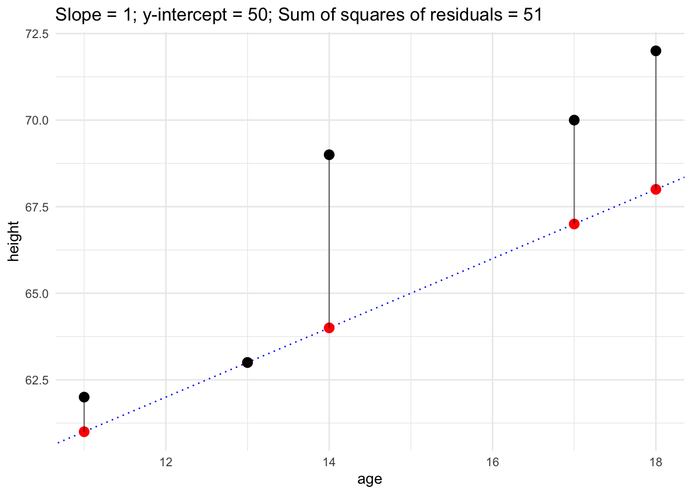

A very common form of regression is Ordinary Least Squares (OLS) linear regression. If no modifiers are put before the term “linear regression” then Ordinary Least Squares linear regression is being referred to.
The basic idea is to try to fit a straight line (aka. regression line) through data points such that you end up with the lowest possible sum of squared residuals.
Residuals
A residual in regression is the distance between an observed data point (aka. observation) and the regression line. While there is a mathematical formula to find where exactly that line should go, that is, to find its slope and the value of \(y\) when the line crosses \(x=0\), for pedagogical purposes, let’s do a bit of trial-n-error.
# A tibble: 5 × 3
person height age
<chr> <dbl> <dbl>
1 Sam 72 18
2 Eloisa 70 17
3 Lola 69 14
4 Heidi 63 13
5 Ellen 62 11
Let’s plot height by age of the kids in the above data frame:
p1 <- morenos %>%ggplot(aes(x = age, y = height))+geom_point(size =3)+theme_minimal()plot(p1)
It looks like there is a relationship between height and age of these kids, such that as the kids get older, their heights increase (unsurprisingly).
Trial-n-error
Let’s plot some lines and calculate the sum of the squares of the residuals for each line. In the plots below, the black points are observed values while the red points are predicted values. The vertical lines connecting the observed values (black points) and the predicted values (red points) are the residuals (aka. errors).
# define a helper functionplot_dots_and_line <-function(df, input_slope, input_intercept) { temp <- df %>%mutate(hypothetical = age * input_slope + input_intercept) p1 <- temp %>%ggplot(aes(x = age, y = height))+# draw a straight line with the slope and y-interceptgeom_abline(slope = input_slope, intercept = input_intercept, color ="blue", linetype=3)+geom_point(aes(y = hypothetical), color ="red", size =3)+geom_segment(aes(xend = age, yend = hypothetical), alpha =0.5)+geom_point(size =3)+ggtitle(str_interp("Slope = ${input_slope}; y-intercept = ${input_intercept}; Sum of squares of residuals = ${sum((temp$height - temp$hypothetical)^2)}"))+theme_minimal()return(p1)}# Make a list of guesses of slopes and y-interceptsguesses <-list(list(g_slope =0, g_intercept =65),list(g_slope =0.5, g_intercept =65),list(g_slope =0.5, g_intercept =60),list(g_slope =1, g_intercept =50),list(g_slope =1, g_intercept =52))# Loop over the guessesfor (guess in guesses) { p1 <-plot_dots_and_line(morenos, guess$g_slope, guess$g_intercept)plot(p1)}

The formula
Okay, enough horsin’ around. Let’s use the formula (actually formulas, or formulae if you must) to get the best-fit regression line, that is, the line with the lowest sum of squares of residuals.
Here’s the formula to get the predicted y-value for a given x-value.
\[
\hat{y}=slope*x+intercept
\]
The \(\hat{y}\) in the formula is referred to as “y-hat” and is the predicted (aka. fitted) y-value for a given x value. And how do you get the slope and intercept, you ask? Math (don’t freak out, it’s not that bad):
Where: \(N\) = number of observations in dataset \(*\) = Good ol’ fashioned multiplication \(\sum\) = The sum of the numbers to the right \(x\) = The explanatory (aka. independent or predictor) variable (here age) \(y\) = The response (aka. dependent) variable (here height)
Let’s look at each piece of this formula with color: \[
slope = \frac{N * \color{red} \sum{(x * y)} \color{black} - \color{orange} \sum{x} \color{black} * \color{green} \sum{y}}{N * \color{blue} \sum{(x^{2})} \color{black} - \color{purple} (\sum{x})^{2}}
\]
So: \(N=5\)\(\color{red} \sum{(x*y)} \color{black} =(18*72+17*70+14*69+13*63+11*62)=(1296+1190+966+819+682) = 4953\) \(\color{orange} \sum{x} \color{black} =(18+17+14+13+11) = 73\) \(\color{green} \sum{y} \color{black} =(72+70+69+63+62) = 336\) \(\color{blue} \sum{(x^{2})} \color{black} =(18^{2}+17^{2}+14^{2}+13^{2}+11^{2})=(324+289+196+169+121) = 1099\) \(\color{purple} (\sum{x})^{2} \color{black} =(18+17+14+13+11)^{2} = 73^{2} = 5329\)
Now, let’s put the numbers into the formula and finally get that rascally slope:
\[slope=\frac{5* \color{red} 4953 \color{black} - \color{orange} 73 \color{black} * \color{green} 336}{5* \color{blue} 1099 \color{black} - \color{purple} 5329}=\frac{24765-24528}{5495-5329}=\frac{237}{166}= 1.427711
\]
Lovely, the slope of the least squares line (aka. line of best fit) is 1.427711.
Now, here’s the formula for the y-intercept (which uses the slope that we just calculated):
\[intercept = \frac{\color{green} \sum{y} \color{black} - slope * \color{orange} \sum{x}}{N}
\]
We already calculated above all the numbers in this formula, so let’s get crackin’!:
Terrific, the y-intercept of the least squares line is 46.35542.
Now, let’s use the slope and the y-intercept we just calculated to draw a line through our data points and calculate the sum of the squares of residuals.
plot_dots_and_line(morenos, 1.427711, 46.35542)
Fit a linear regression
As I’m sure you have likely guessed, there’s a function to do all the math we just did by hand: lm(). Because the dependent variable (aka. response variable) is continuous, we will fit a linear regression (rather than a logistic regression).
fitted_model <- morenos %>%lm(height ~ age, data = .)print(fitted_model)
Call:
lm(formula = height ~ age, data = .)
Coefficients:
(Intercept) age
46.355 1.428
The summary() function gives you the above info as well as more info:
summary(fitted_model)
Call:
lm(formula = height ~ age, data = .)
Residuals:
1 2 3 4 5
-0.05422 -0.62651 2.65663 -1.91566 -0.06024
Coefficients:
Estimate Std. Error t value Pr(>|t|)
(Intercept) 46.3554 4.9552 9.355 0.00259 **
age 1.4277 0.3342 4.272 0.02355 *
---
Signif. codes: 0 '***' 0.001 '**' 0.01 '*' 0.05 '.' 0.1 ' ' 1
Residual standard error: 1.926 on 3 degrees of freedom
Multiple R-squared: 0.8588, Adjusted R-squared: 0.8117
F-statistic: 18.25 on 1 and 3 DF, p-value: 0.02355
The Call section and the Residuals sections are transparently named. With small datasets, the residuals are given here in the summary, but when there are many data points (and therefore an equal number of many residuals), only summary information is given about the residuals, specifically the min and max, and the first and third quartiles, and the median. Ideally, the residuals should be normally distributed and centered on zero. If the summary info given isn’t enough to determine those assumptions, you can retrieve all the residuals with the residuals() function:
The Coefficients section gives a lot of numbers. The Estimate column gives the intercept, which again, is the predicted or fitted value of \(y\) when \(x\) is zero (i.e., the predicted value of the response variable when the explanatory variable has a value of zero). The slope of age is given in the age row, under the Estimate column. What this means, is that for each unit increase of the the explanatory (i.e., age), there is on average a 1.4277 unit increase in the response variable. So, in this toy example, this means that for each year older, a kid is 1.4277 inches taller. And, this general trend is statistically significant because the p-value (i.e., 0.02355) in the far right column (i.e., Pr(>|t|)) is smaller than the alpha level of 0.05 (is we consider that alpha level to be our threshold below this statistical significance occurs).
Predicted values
We can get the predicted (aka. fitted) values (i.e., \(\hat{y}\)) from the model and add them to the original dataframe.
# A tibble: 5 × 4
person height age predicted
<chr> <dbl> <dbl> <dbl>
1 Sam 72 18 72.1
2 Eloisa 70 17 70.6
3 Lola 69 14 66.3
4 Heidi 63 13 64.9
5 Ellen 62 11 62.1
Residuals
We can get the residuals from the model and add them to the original dataframe. The residuals are the distances between the observed values and their corresponding predicted values.
# A tibble: 5 × 5
person height age predicted residual
<chr> <dbl> <dbl> <dbl> <dbl>
1 Sam 72 18 72.1 -0.0542
2 Eloisa 70 17 70.6 -0.627
3 Lola 69 14 66.3 2.66
4 Heidi 63 13 64.9 -1.92
5 Ellen 62 11 62.1 -0.0602
Let’s now (more easily) plot the observed data points \(y\), the predicted values (i.e., \(\hat{y}\)), and the residuals.
morenos %>%ggplot(aes(x = age, y = height))+geom_smooth(method = lm, se =FALSE, linetype =3)+geom_point(aes(y = predicted), color ="red")+geom_point()+theme_minimal()+geom_segment(aes(xend = age, yend = predicted), alpha =0.5)
`geom_smooth()` using formula = 'y ~ x'
Assumptions of linear regression
Linear regression (like most inferential statistical tests) has a number of assumptions that should be met in order to obtain reliable results. I’m borrowing liberally from Levshina (2015, p. 155) here.
Assumptions:
The observations are independent from one another. If the observations are related to each other (e.g., some/many tokens come from the same person or from the same word), then mixed-effect regression should be used with person and/or word specified as what’s called a random effect.
The response variable is continuous. If ordinal, then ordinal regression should be used instead. If categorical with two levels in the response variable, then logistic regression should be used. If categorical with three or more levels in the response variable, then multinomial regression should be used.
The relationship between the response and explanatory variable is linear. If not, then a transformation of the response and/or explanatory variables should be performed (e.g., taking the logarithm of word frequency).
The residuals of the model vary constantly. This is called homoscedasticity of variance. In other words, the variability of the residuals does not increase or decrease with the response variable nor with the explanatory variable(s). Fitting a scatterplot of the residuals by the predicted (aka. fitted) values of the linear model is a good way to detect if there is heteroscedasticity of variance. If there is heteroscedasticity a Box-Cox transformation of the response variable can help. If still problematic, a boostrapping procedure is the next step.
There is no multicollinearity of the explanatory variables, that is, they are not (overly) correlated with each other. Value Inflation Factors (VIF) scores below 5 or 10 indicate not much multicollinearity going on. The car package has a vif() function (and there are other packages with a similar functions.)
The residuals are not autocorrelated. A p-value below 0.05 in the durbinWatsonTest() function in the car package indicates autocorrelation. This is rarely a problem.
The residuals should be normally distributed, with a mean of zero. This assumption becomes less important as sample size increases.
Activity
From Chapter 4 “Linear Regression 1” in Regression Modeling for Linguistic Data v1.1 by Sonderegger et al. (2022).
Using the languageR::english dataset, create a linear regression model with RTlexdec as the response variable and WrittenFrequency as the only explanatory variable.
Then, figure out what the predicted RTlexdec for each of the following written frequencies. First, calculate the predicted RTlexdec values manually using the y-intercept and the slope given by the linear regression model (and probably using R as a basic calculator, e.g., \(y\text{-}intercept + slope * x\)). Second, calculate the predicted RTlexdec values by using the predict.lm() function.
What is the predicted RTlexdec value when WrittenFrequency is 5?
How about when WrittenFrequency is 10?
After a good-faith effort, if you need help take a look at Dr. Brown’s code below.
Code
# fit linear regression modellanguageR::english %>%lm(RTlexdec ~ WrittenFrequency, data = .) -> m1summary(m1)
Call:
lm(formula = RTlexdec ~ WrittenFrequency, data = .)
Residuals:
Min 1Q Median 3Q Max
-0.45708 -0.11657 -0.00109 0.10403 0.56085
Coefficients:
Estimate Std. Error t value Pr(>|t|)
(Intercept) 6.735931 0.006067 1110.19 <2e-16 ***
WrittenFrequency -0.037010 0.001134 -32.63 <2e-16 ***
---
Signif. codes: 0 '***' 0.001 '**' 0.01 '*' 0.05 '.' 0.1 ' ' 1
Residual standard error: 0.1413 on 4566 degrees of freedom
Multiple R-squared: 0.1891, Adjusted R-squared: 0.1889
F-statistic: 1065 on 1 and 4566 DF, p-value: < 2.2e-16
Code
# save the intercept and slope to variablesintercept <- m1$coefficients["(Intercept)"]slope <- m1$coefficients["WrittenFrequency"]# semi-manual mathprint(intercept + slope *5)
(Intercept)
6.55088
Code
print(intercept + slope *10)
(Intercept)
6.365829
Code
# use the predict.lm() functionpredict.lm(m1, newdata =tibble(WrittenFrequency =c(5, 10)))
1 2
6.550880 6.365829
References
Levshina, Natalia. 2015. How to do Linguistics with R: Data Exploration and Statistical Analysis. Amsterdam / Philadelphia: John Benjamins.